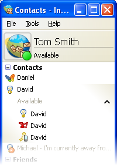

- Caratteristiche
- Altri sistemi e lingue
- Note di rilascio
- Scarica Instantbird 1.5 ora!
Caratteristiche di Instantbird
Abbiamo assemblato per te le funzionalità più straordinarie per offrirti una esperienza di messaggistica sempre migliore.
Parla con tutti i tuoi amici
Con Instantbird puoi parlare con tutti i tuoi amici da una sola applicazione!
AIM, Yahoo, MSN, Google Talk, Facebook e anche Twitter sono supportati!

Senza problemi
Instantbird è stato disegnato e sviluppato pensando soprattutto a stabilità e semplicità.
Apprezzerai la sua interfaccia pulita: senza comandi complicati, niente ti distrarrà dalle tue conversazioni!
Niente pubblicità, nessun contenuto indesiderato a interromperti.

Conversazioni in schede
Le conversazioni sono raggruppate in schede, non riceverai nessun popup inaspettato.
Le schede sono facili da usare: puoi trascinarle per metterle in ordine, o spostare una conversazione in una nuova finestra.

Conversazioni personalizzate
Con alcuni temi attentamente disegnati sono disponibili di default e centinaia come componenti aggiuntivi, c'è tutto per rendere una conversazione molto "personale".
Trasformiamo la messaggistica in un'esperienza colorata e piacevole!

Contatti unificati
Hai molti indirizzi per contattare la stessa persona?
Nessun problema, trascina un contatto sopra l'altro e Instantbird capirà che è la stessa persona.

Sempre qui per te
Instantbird funzionerà su tutti i tuoi computer, siano Windows, Mac OS X oppure Linux.
Essendo gratuito e "open source", non dovrai mai pagare niente per usarlo.
Non avrai più bisogno di usare un altro client di messaggistica!

Nessun limite alle possibilità
Potenti strumenti come la ricerca in linea per trarre il massimo dalle tue conversazioni.
Molti altri sono disponibili come componenti aggiuntivi, non ci sono limiti per Instantbird!